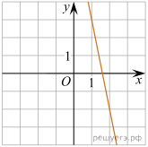
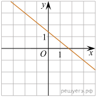
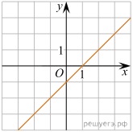
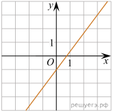
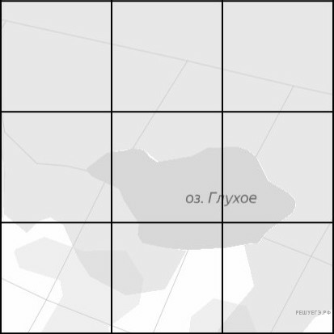
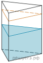
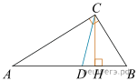
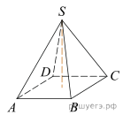

1. В обменном пункте 1 гривна стоит 3 рубля 70 копеек. Отдыхающие обменяли рубли на гривны и купили 3 кг помидоров по цене 4 гривны за 1 кг. Во сколько рублей обошлась им эта покупка? Ответ округлите до целого числа.
Ответ:
2.Установите соответствие между величинами и их возможными значениями:
ВЕЛИЧИНЫ
А) скорость движения автомобиля
Б) скорость движения пешехода
В) скорость движения улитки
Г) скорость звука в воздушной среде
ВОЗМОЖНЫЕ ЗНАЧЕНИЯ
1) 0,5 м/мин
2) 60 км/час
3) 330 м/сек
4) 4 км/час
Запишите в ответ цифры, расположив их в порядке, соответствующем буквам:
| А | Б | В | Г |
Ответ:
3. В таблице показано расписание пригородных электропоездов по направлению Москва Ленинградская — Клин — Тверь.
| Номер электрички | Москва Ленинградская | Клин | Тверь |
| 1 | 17:31 | 19:04 | |
| 2 | 17:46 | 19:08 | 19:55 |
| 3 | 18:10 | 19:28 | 20:15 |
| 4 | 18:15 | 19:37 | 21:11 |
| 5 | 18:21 | 19:50 | |
| 6 | 19:14 | 20:55 | |
| 7 | 19:21 | 21:10 | 22:11 |
Владислав пришёл на станцию Москва Ленинградская в 18:20 и хочет уехать в Тверь на ближайшей электричке без пересадок. В ответе укажите номер этой электрички.
Ответ:
4. Длина биссектрисы lc, проведённой к стороне c треугольника со сторонами a, b и c, вычисляется по формуле
Найдите длину биссектрисы lc, если a = 3, b = 9,
Ответ:
5. Если гроссмейстер А. играет белыми, то он выигрывает у гроссмейстера Б. с вероятностью 0,52. Если А. играет черными, то А. выигрывает у Б. с вероятностью 0,3. Гроссмейстеры А. и Б. играют две партии, причем во второй партии меняют цвет фигур. Найдите вероятность того, что А. выиграет оба раза.
Ответ:
6. От дома до дачи можно доехать на автобусе, на электричке или на маршрутном такси. В таблице показано время, которое нужно затратить на каждый участок пути. Какое наименьшее время потребуется на дорогу? Ответ дайте в часах.
| 1 | 2 | 3 | |
| Автобусом | От дома до автобусной станции — 15 мин. | Автобус в пути: 2 ч 15 мин. | От остановки автобуса до дачи пешком 5 мин. |
| Электричкой | От дома до станции железной дороги — 25 мин. | Электричка в пути: 1 ч 45 мин. | От станции до дачи пешком 20 мин. |
| Маршрутным такси | От дома до остановки маршрутного такси — 25 мин. | Маршрутное такси в дороге: 1 ч 35 мин. | От остановки маршрутного такси до дачи пешком 40 мин. |
Ответ:
7. Установите соответствие между графиками линейных функций и угловыми коэффициентами прямых.
ГРАФИКИ

А)

Б)

В)

Г)
УГЛОВЫЕ КОЭФФИЦИЕНТЫ
1)
2) - 5
3) - 0,8
4) 1
Запишите в ответ цифры, расположив их в порядке, соответствующем буквам:
| А | Б | В | Г |
Ответ:
8. Известно, что спектр ртутной лампы — линейчатый. Выберите утверждения, которые следуют из этого факта.
1) У любой ртутной лампы линейчатый спектр.
2) Любая лампа с линейчатым спектром — ртутная.
3) У любой нертутной лампы спектр не является линейчатым.
4) Если спектр лампы линейчатый то она может быть ртутной.
Ответ:
9. На рисунке изображён план местности (шаг сетки плана соответствует расстоянию 1 км на местности). Оцените, скольким квадратным километрам равна площадь озера Глухое, изображённого на плане. Ответ округлите до целого числа.

Ответ:
10. Дачный участок имеет форму прямоугольника со сторонами 20 метров и 30 метров. Хозяин планирует обнести его забором и разделить таким же забором на две части, одна из которых имеет форму квадрата. Найдите общую длину забора в метрах.
Ответ:
11. В сосуд, имеющий форму правильной треугольной призмы, налили 2300 см3 воды и погрузили в воду деталь. При этом уровень воды поднялся с отметки 25 см до отметки 27 см. Найдите объем детали. Ответ выразите в см3.

Ответ:
12. Острые углы прямоугольного треугольника равны 85° и 5°. Найдите угол между высотой и биссектрисой, проведенными из вершины прямого угла. Ответ дайте в градусах.

Ответ:
13. Основанием пирамиды является прямоугольник со сторонами 3 и 4. Ее объем равен 16. Найдите высоту этой пирамиды.

Ответ:
14. Найдите значение выражения
Ответ:
15. Налог на доходы составляет 13% от заработной платы. После удержания налога на доходы Мария Константиновна получила 9570 рублей. Сколько рублей составляет заработная плата Марии Константиновны?
Ответ:
16. Найдите значение выражения
Ответ:
17. Найдите корень уравнения
Ответ:
18. Каждому из четырёх неравенств в левом столбце соответствует одно из решений в правом столбце. Установите соответствие между неравенствами и их решениями.
НЕРАВЕНСТВА
А)
Б)
В)
Г)
РЕШЕНИЯ
А)
Б)
В)
Г)
Впишите в приведённую в ответе таблицу под каждой буквой соответствующую цифру.
| А | Б | В | Г |